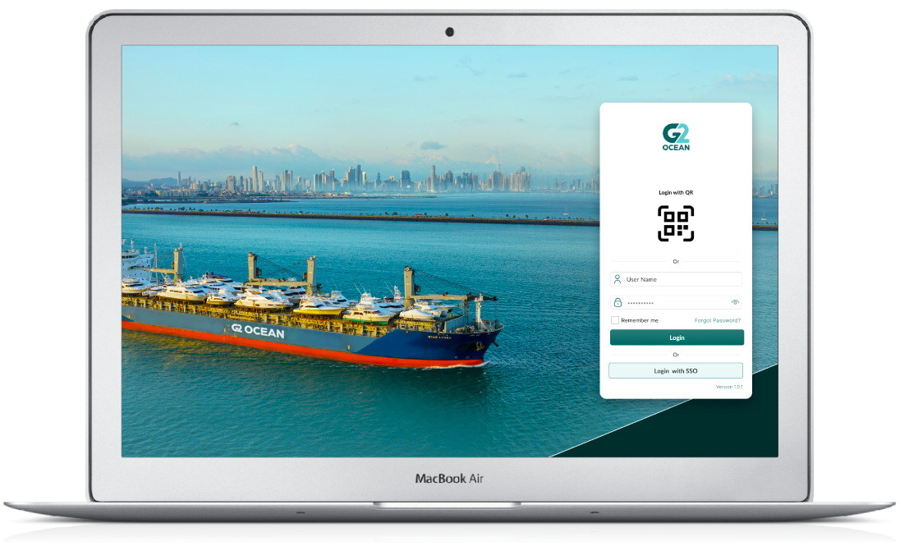
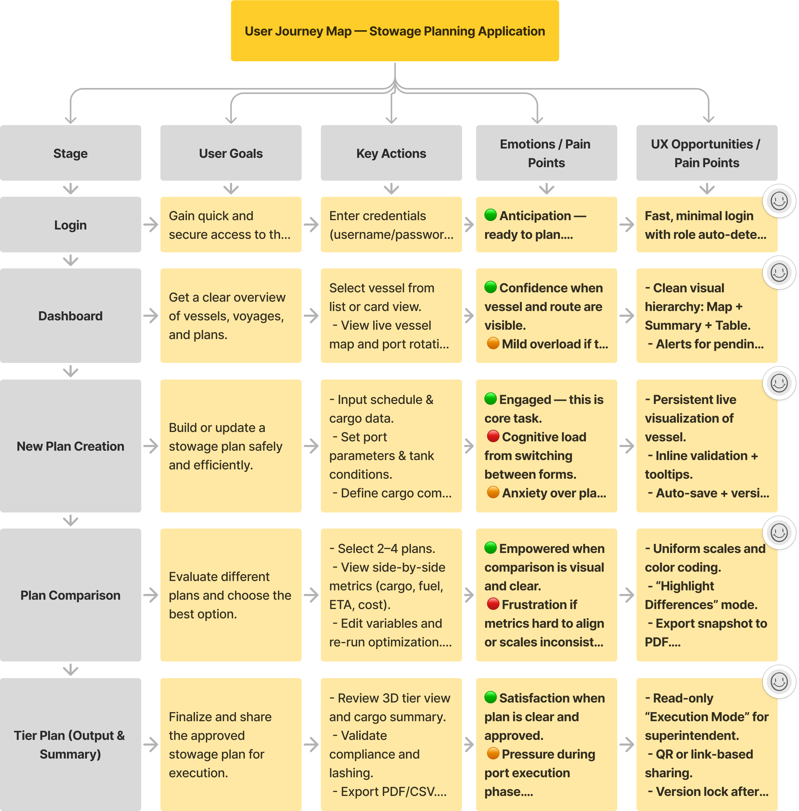
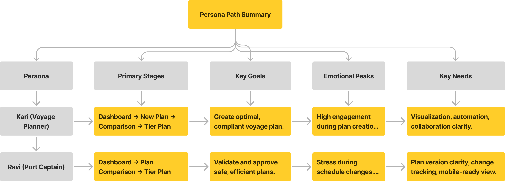
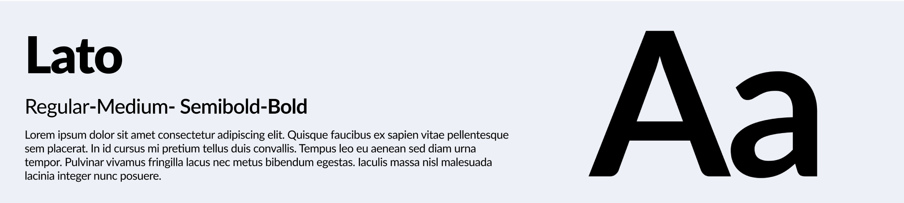
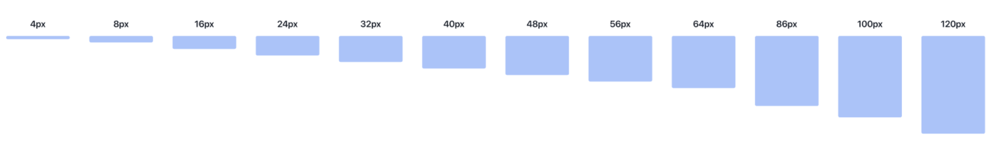
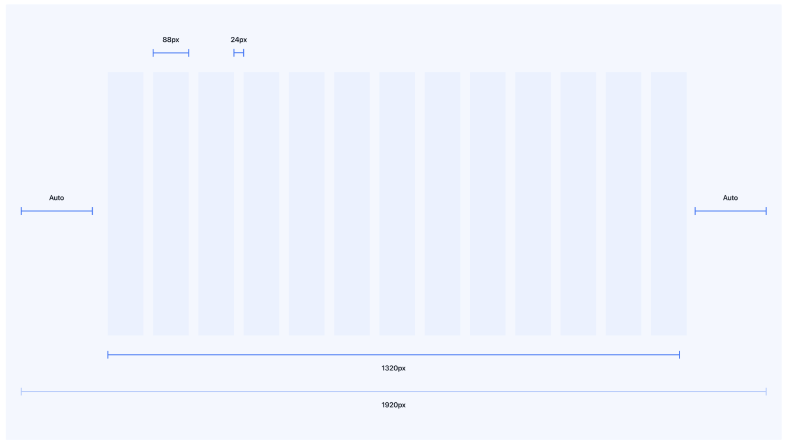
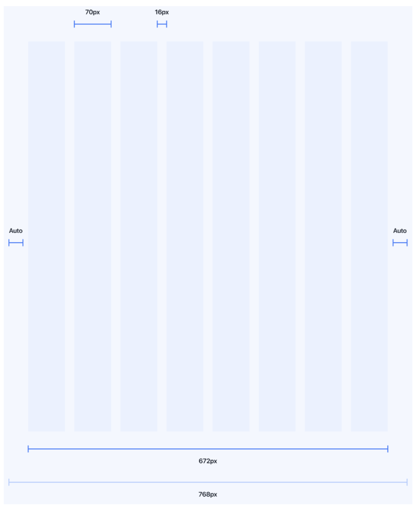
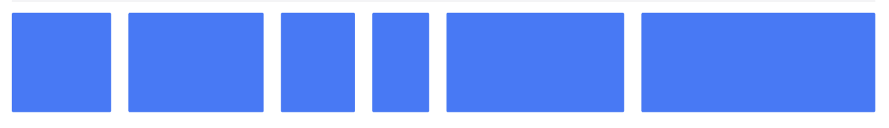
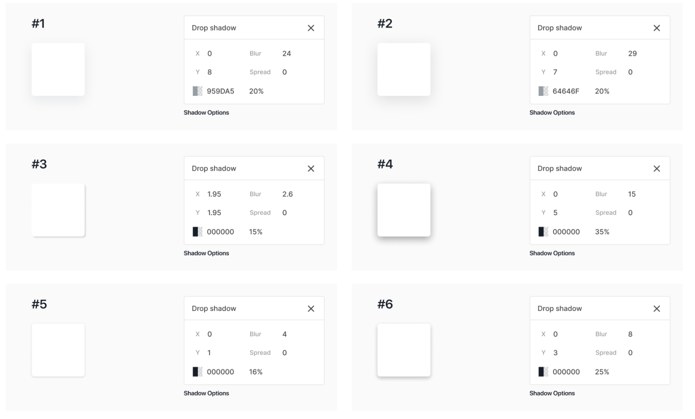

Project Name: G20 Shipping- Stowage and vessel planning |Industry: Marine Cargo shipping. | Year: 2025 | Category: Web Application
G20 Shipping is a bulk carrier shipping company that uses this application for its stowage and voyage planning operations. The platform helps the team efficiently manage cargo distribution, optimize vessel performance, and ensure safe and compliant voyages."
Planning should feel exciting, not overwhelming. With guided steps and clear insights, I make every voyage a smooth, stress-free journey.

End users:
Planners and Port Captain / Operations Coordinator
What the end users are doing?:
1. Plan / Design the Stowage / Cargo plan for each voyage. 2. Manage Voyage sequencing. 3. Coordinate port operations
Main challenges planners are facing?:
1. stowage patterns is complex and non-standard because of Cargo shape, size and diversity.
2. Stowage complexity because of automation/optimization tools are less mature.
3. Cargo damage risk.
4. Port infrastructure & gear availability
5. Minimizing port time.
6. Weather and route constraints.
Best UX Characteristics:
1. Visual Clarity & Spatial Awareness.
2. Fast rendering for large data (hundreds of cargo units).
3. Offline caching for vessels with limited connectivity.
4. Automatic backups before each save or upload.
5. Lightweight UI that runs smoothly even on low-spec shipboard PCs.
6. Guided planning flow step-by-step.
7. Auto-generated reports: cargo plan summary, lashing list, hold readiness checklist.
8. Validation messages before saving plan.
9. Enable fast operations but allow checks-Auto-placement + manual override.A
| Name: | Kari Johansen |
| Role / Title: | Senior Voyage & Stowage Planner |
| Segment Experience Level: | 0+ years in vessel planning, cargo coordination, and port operations |
| Location: | Bergen, Norway (operates globally) |
| Age Range: | 38–45 |
| Education: | B.Sc. in Nautical Science / Maritime Logistics |
| Work Environment: | Office-based with frequent coordination with vessels, port agents, and cargo surveyors |
About Kari:
1. Kari is responsible for designing and managing stowage plans for a fleet of open-hatch vessels that carry pulp, timber, and industrial cargo worldwide.
She works under tight time frames to ensure the vessel remains stable, safe, and compliant while optimizing loading and discharge efficiency.
Her day typically involves analyzing cargo lists, checking port gear availability, validating stability data, and communicating with multiple teams.
Goals & Motivations:
1. Ensure safe and compliant cargo stowage no overloading, damage, or imbalance.
2. Optimize vessel utilization minimize empty space and reduce port turnaround time.
3. Increase planning efficiency through visual tools and automation.
4. Maintain coordination across operations, chartering, and port teams.
Key Responsibilities:
1. Plan and update stowage for each voyage.
2. Validate cargo loading sequences and weight distribution.
3. Liaise with port agents and stevedores to confirm lifting gear and schedules.
4. Generate and share voyage stowage reports with stakeholders.
Pain Points & Challenges:
1. Complex Cargo Mix.
2. Information Fragmentation from emails, Excel sheets, and PDFs hard to consolidate quickly.
3. Last-Minute Changes.
4. Gear & Port Constraints.
5. Collaboration Friction
Technology & Behaviour:
1. Devices: Desktop and large-screen laptop; tablet occasionally onboard.
2. Preferred Interaction Style: Visual and data-driven; likes drag-and-drop, dashboards, and color-coded validation cues.
3. Work Pattern: Fast-paced, multitasking, often managing several voyages simultaneously.
Quotes:
“Every hold is a puzzle — I need to see it, not just calculate it.”
“If one cargo detail changes, everything downstream must stay consistent — I can’t afford rework.”
“Good planning software should think with me, not against me.”ages simultaneously.
Needs from the Application:
1. Intuitive visualization: Clear 2D/3D vessel view with easy cargo placement.
2. Real-time validation: Automatic checks for balance, weight, and lashing compliance.
3. Collaborative features: Shared workspace for planners, captains, and port staff.
4. Quick reporting/ Optimizing: One-click generation of loading plans and compliance reports.
Design Implications:
1. Prioritize visual design clarity (deck/hold view).
2. Use color-safe alerting (red/orange/blue with icons) for night shifts.
3. Include undo/redo and auto-save to support safe experimentation.
| Name: | Ravi Menon |
| Role / Title: | Port Captain / Fleet Operations Coordinator |
| Organization Type: | Shipping Line – Open Hatch Fleet |
| Segment Experience Level: | 15+ years (ex-Master Mariner, now shore-based operations) |
| Location: | Singapore |
| Age Range: | 38–45 |
| Education: | Master Mariner’s Certificate, B.Sc. Nautical Science |
| Work Environment: | Office and port visits; supervises multiple vessel turnarounds |
About Ravi:
1. Ravi ensures that loading and discharge operations at ports follow the approved stowage plans safely and efficiently.
2. He acts as the link between the shore planning team (like Kari, the voyage planner) and the shipboard crew / terminal operators.
3. His role demands rapid decision-making, risk assessment, and coordination when unexpected operational issues arise.
Goals & Motivations:
1. Quickly access and verify the latest version of the stowage plan.
2. Minimize vessel idle time and turnaround delays.
3. Ensure vessel stability and cargo safety in real-world conditions.
4. Quickly access and verify the latest version of the stowage plan.
5. Maintain safe and compliant port operations.
6. Communicate effectively between ship and office teams.
Pain Points & Challenges:
1. On-site Visibility-Hard to visualize complex holds using PDFs or spreadsheets.
2. Version Confusion - Receives multiple plan versions from office; unsure which is final.
3. Connectivity - Limited internet access at some terminals.
4. Late Cargo Changes - Often receives new cargo lists during loading, causing rework.
Quotes:
“I can’t afford to scroll through 20 pages of plans — I need the summary that matters right now.”
“If something changes, I must see what changed and why in seconds.”
Needs from the Application:
1. Intuitive visualization: Clear 2D/3D vessel view with easy cargo placement.
2. Real-time validation: Automatic checks for balance, weight, and lashing compliance.
3. Collaborative features: Shared workspace for planners, captains, and port staff.
4. Quick reporting/ Optimizing: One-click generation of loading plans and compliance reports.
Design Implications:
1. Prioritize visual design clarity (deck/hold view).
2. Use color-safe alerting (red/orange/blue with icons) for night shifts.
3. Include undo/redo and auto-save to support safe experimentation.


| Page / Module | Voyage Planner (Kari) | Port Captain (Ravi) |
|---|---|---|
| Login | Full access | Restricted by role |
| Dashboard | Create, view, compare plans | Review & monitor |
| New Plan Creation | Create & optimize plans | Review & approve |
| Tier Plan (Output) | Finalize, export, share | Validate & sign of |
As a
Voyage Planner
I want to
view real-time weather conditions and route restrictions directly within the voyage planning interface
So that I can
make informed decisions, adjust routes proactively, and ensure voyage safety and fuel efficiency without switching between multiple external tools.
Acceptance Criteria:
1. Weather Overlay on Map:
The system displays real-time weather layers (wind, wave height, current, storm zones) on the voyage route map.
Users can toggle visibility for each weather parameter.
2. Weather Overlay on Map:
If a plotted route crosses a hazardous zone (e.g., high wind, restricted area), the system provides a visual warning and a short explanation.
Users receive suggestions for alternate safe routes.
3. Forecast Timeline:
A time-slider allows the user to view how weather evolves along the voyage timeline.
The system updates forecasts dynamically as departure times change.
4. Smart Recommendations:
The app suggests optimal routes balancing weather conditions, ETA, and fuel consumption.
Users can compare their planned route with the suggested one visually and through summary metrics.
5. Port-Level Weather Snapshot:
Each port in the rotation view displays key weather indicators (wind, tide, visibility) for expected arrival time.
6. Notification and Updates:
When weather conditions change significantly, users are notified within the app (e.g., “Strong headwinds expected near Colombo — ETA may increase by 6 hours”).
UX Notes / Design Considerations:
1. Use intuitive color coding for risk (🟢 Safe, 🟡 Caution, 🔴 Unsafe).
2. Integrate layer controls on the map (similar to marine navigation software).
3. Provide a “What-if” simulation mode to test alternative routes visually.
4. Ensure minimal clutter — weather visualization should enhance, not overwhelm, the map.
5. Include update timestamps for transparency (“Forecast updated: 18:00 UTC”).
UX Notes / Design Considerations:
1. Use intuitive color coding for risk (🟢 Safe, 🟡 Caution, 🔴 Unsafe).
2. Integrate layer controls on the map (similar to marine navigation software).
3. Provide a “What-if” simulation mode to test alternative routes visually.
4. Ensure minimal clutter — weather visualization should enhance, not overwhelm, the map.
5. Include update timestamps for transparency (“Forecast updated: 18:00 UTC”).
Outcome::
Planners can see, predict, and adjust their voyage based on weather and route constraints — leading to safer navigation, fewer delays, and improved operational efficiency.
Hard to visualize complex holds using PDFs or spreadsheets.
makes it difficult to:
Understand cargo allocation per hold/tank
Plan efficiently without switching between multiple files
UX Solution:
1. Interactive 2D/3D Visualization: HoldChanges in data reflect instantly in the visual.
2. Split View: Data + Visualization- Reduces context switching and errors.
3. Scenario Comparison Mode:
Allow users to compare stowage plans visually (side-by-side).
Highlight changes in cargo allocation, total weight, or port sequences.
Version Confusion - with multiple plans.
Problem Understanding:
Receive several versions of the same plan (e.g., Plan_v3_final_final.pdf 😅).
Cannot easily distinguish what changed between versions.
Don’t know which one is approved or currently active.
Waste time checking email attachments or shared folders.
UX Solution:
1. Introduce a versioning system within the application: Version number + date/time + author name displayed prominently.
2. Use color-coded status tags:
🟢 Approved / Final
🟡 Draft / Pending Review
🔴 Outdated / Superseded
3. Auto-highlight to Which plan is current, What changed, Who approved it, Where to find older versions (if needed)
Weather and route constraints.
Problem Understanding:
Users face challenges such as:
1. Having to manually check weather forecasts or external route advisories.
2. Difficulty visualizing how weather impacts route decisions, fuel usage, or ETA.
3. Lack of real-time updates or alerts within the planning interface.
Weather-Integrated Route Visualization :
1. Data Simplification & Color Logic. Instead of showing complex meteorological data Use traffic-light color coding for risk:
🟢 Safe
🟡 Caution
🔴 Unsafe
Show small icons for condition types (e.g., 🌧️ Rain, 🌊 Swell, 💨 Wind)
Outcome:
Users can see, predict, and respond to weather and route constraints without leaving the application — improving both decision quality and confidence.
Late Cargo Changes - Often receives new cargo lists during loading, causing rework.
Problem Understanding:
1. Rework of stowage plans.
2. Increased risk of loading errors or imbalance.
3. Time pressure and frustration due to unclear visibility of “what exactly changed.”
4. Lack of smooth update communication between office and vessel teams.
Cargo Change Comparison View:
Show an intelligent comparison panel highlighting: Added, removed, or modified cargoes (color-coded):
🟢 Added: 2,000 MT Iron Ore (Hold 3)
🔴 Removed: 500 MT Coal (Hold 5)
🟡 Modified: Cargo destination changed (Singapore → Qingdao)
Benefits:
Outcome:
1. Users can quickly identify what needs attention rather than re-checking the entire plan.
2. Hovering shows what changed and why.
3. Instantly see and understand what changed,
Selecting vessels/ plans from long list
Problem Understanding:
1. Long dropdowns or tables that require scrolling/searching manually.
2. Difficulty identifying the correct vessel or plan among similar names.
3. Unclear plan status (draft, active, archived, etc.).
4. Wasted time locating frequently used vessels or current voyages.
Smart Search & Filter Panel
Replace static dropdowns with a dynamic search + filter interface:
Allow users to “star” or “pin” frequently accessed vessels. Show these at the top of the list under a “Favorites” section.
Smart Sorting & Auto-Suggestions Automatically sort by recent activity or relevance instead of alphabetically.
Suggest the most likely vessel or plan based on: User’s past activity, Current date/time (e.g., ongoing voyages first)
Benefit:
Users can locate and open vessels/plans within seconds, even in large fleets — minimizing cognitive friction and navigation time.
The system feels personalized, organized, and intelligent.
Too much Data entry
Problem Understanding:
1. Re-entering similar data across screens (cargo, port, voyage info).
2. Navigating through multiple steps or dialog boxes.
3. Too many confirmations or manual inputs for routine operations.
4. A feeling of “friction” — the tool slows users down instead of helping.
UX Solutions
1. Use auto-suggestions and remembered inputs:
Click → edit cell → Enter → saved instantly.
2. Use a guided multi-step interface::
Each step auto-loads relevant data and validates before moving forward.
Reduces need to jump between screens manually.
Example: “Next → Confirm Cargo → Optimize → Finalize.”
3. Reusability: Templates & Cloning:
save templates or clone previous plans
Editable fields update automatically for new voyage dates or cargo.
Reduces repetitive entry across similar voyages.
4. Auto-Save & Auto-Validation:
Automatically save progress without asking the user to click “Save” repeatedly.
Auto-validate inputs as they type (no need to hit “Check” manually).
Removes unnecessary interruptions.
5. Predictive Input & Quick Pickers:
Implement predictive dropdowns and tag-style selection
Type two letters → instantly see matching ports, cargoes, or vessels.
Use keyboard navigation to select without lifting hands from the keyboard.
Outcome:
The application becomes faster, more fluid, and less tiring — allowing planners to focus on decision-making, not data entry.
You’ll achieve a “flow-state” UX, where users feel the system anticipates their next step.
Training with each updates
Problem Understanding:
Frequent updates change how users interact with the automation/optimization tools.
The interface or flow might not be intuitive or self-explanatory.
Users lose confidence or efficiency after each update, needing retraining.
UX Solutions
Consistency in Interaction Patterns, Contextual Guidance (Just-in-Time Learning):
Add inline tooltips, onboarding overlays, or micro-tutorials that appear only when a user interacts with a new or updated feature.
Example: “New Optimization Mode: Auto-adjust by cargo type — click here to preview.
Include a “What’s New” panel highlighting small updates visually.
Pagination issues
UX Solutions
Cognitive errors or avoid mistakes
Easily noticed Action buttons
| Principle | UX Intent | Example |
|---|---|---|
| Consistency | Unified visual style and interaction logic | Same iconography for “Edit / Save / Upload” everywhere |
| Immediate Feedback | Every action updates UI in real-time | “Plan Saved Successfully” toast messages |
| Safety Validation | Prevent unsafe or invalid inputs | Alerts for exceeding hold weight limits |
| Collaboration Transparency | Everyone sees who last edited a plan | “Edited by Kari – 12:45 UTC” label on each section for exceeding hold weight limits |
| Offline Resilience | Key workflows available offline | Local save + sync when connection resumes |
Purpose:
Provide secure access for multiple user roles (Planner, Port Captain, Superintendent, Admin).
Key UX Characteristics:
1. Simple and fast entry — minimal fields (Username, Password, Role).
2. Role-based dashboard redirection after login.
3. Remember user preference (last vessel, theme, language).
4. Multi-factor authentication for shore-based users.
5. Offline login caching for shipboard users with limited connectivity.
Design Implications:
1.Avoid clutter; clean maritime-themed background (vessel silhouettes or sea map).
2. Provide “Continue Offline” or “Sync Later” options.
3. Error feedback should be plain (“Incorrect password”) with retry guidance.
Purpose:
Give users an overview of current fleet activity, voyage plans, and vessel positions — the command centre of the app.
Primary User: Voyage Planner (Kari)
Secondary Users: Port Captain (Ravi)
Key UX Characteristics:
1. Vessel Selector Panel- Dropdown or card view with vessel details and quick access.
2. Port Rotation Visualization- Interactive route line or map showing next ports with ETA, cargo summary, and color-coded readiness status.
3. Live Vessel Position- Map with real-time AIS feed or simulated track.
4. Plan Table View- Lists existing stowage plans (status, created by, date, version).
5. Quick Actions- Create new plan / Duplicate / Compare / Download summary.
Design Implications:
1.Use map- based visualization (globe or flat map) for intuitive navigation.
2. Provide filter and sort options for plan history (by date, vessel, status).
3. Display alerts (pending approval, version outdated) in a top notification bar.
4. Optimize for information density — one-glance overview without feeling crowded.
Purpose:
The core module for planners to define and optimize a voyage plan.
Sections Inside New Plan:
1.Schedule / Cargo Input- Show cargo summary by type, weight, port of load/discharge...
2. Mixing Matrix- UX Goals: Immediate clarity, prevention of unsafe combinations....
3. Tank Condition- Display ballast and tank status (fuel, water, draft)...
4. Port Parameters-UX Goals: Reduce re-entry; easy access to frequently used ports...
5. Speed / Fuel Consumption- UX Goals: Predictive visualization and easy optimization sliders...
6. Output Section- Summary of voyage time, total fuel, cost, and stability compliance...
Design Implications:
1.Use a persistent visualization pane (mini 3D model or schematic) that updates live across all sub-sections.
2. Keep the top navigation sticky for fast switching between sections.
3. Enable autosave + progress tracking for long planning sessions.
4. Provide "Optimization Summary Modal" showing before/after comparison.
Purpose:
Allow users to visually and numerically compare up to 3–4 plans to decide the best option.
Key UX Characteristics:
1. Comparison metrics panel: cargo utilization %, total fuel, ETA, cost, ballast, trim stability.
2. Editable fields: user can tweak parameters and recalculate instantly.
4. Highlight differences (color-coded delta indicators).
Design Implications:
1. Use consistent visual scale across models.
Purpose:
Deliver a final, shareable view of the stowage plan in visual and tabular form — ready for operational use.
Key UX Characteristics:
1. Tier Visualization: Layered deck/hold representation; toggle between levels.
2. Editable fields: user can tweak parameters and recalculate instantly.
4. Highlight differences (color-coded delta indicators).
Design Implications:
1. Provide zoomable, printable visualization.

| Style | Type face | Weight | Size (px) |
|---|---|---|---|
| Display- Large | Lato | Regular | 34 |
| H1 | Lato | Regular | 28 |
| H2 | Lato | Regular | 26 |
| H3 | Lato | Regular | 24 |
| Headline | Lato | Regular | 20 |
| Head line Bold | Lato | Bold | 18 |
| Sub Header | Lato | Regular | 18 |
| Sub Header Bold | Lato | Bold | 16 |
| Body | Lato | Regular | 16 |
| Body Bold | Lato | Bold | 14 |
| Body Highlight | Lato | Semi Bold | 16 |
| Body Small | Lato | Regular | 14 | Body Smallest | Lato | Regular | 12 |




